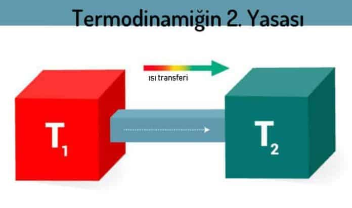

Termodinamiğin İkinci Yasası

Termodinamiğin ikinci yasası deneysel olarak bir ısı bilgisi önermesi olarak kabul edilir fakat bu yasa altında yatan istatistiksel kuantum mekaniğiyle anlaşılabilir ve açıklanabilir. İstatiksel mekanik literatüründe entropi, makroskopik evrelerde mikroskobik gruplaşmaların ölçümü olarak ifade edilir. Çünkü ısıbilgisinin denge, dengede olmayan duruma göre büyük miktarda mikroskopik dizilişe sahiptir. Bu maksimum entropiye sahiptir ve ikinci yasayı takip eder çünkü düzensiz yalnız değişim kısmen sistemin ısı bilgisinin dengesini geliştirmesini sağlar.
Entropideki Sonsuz Küçük Artış
dS = δQ/T